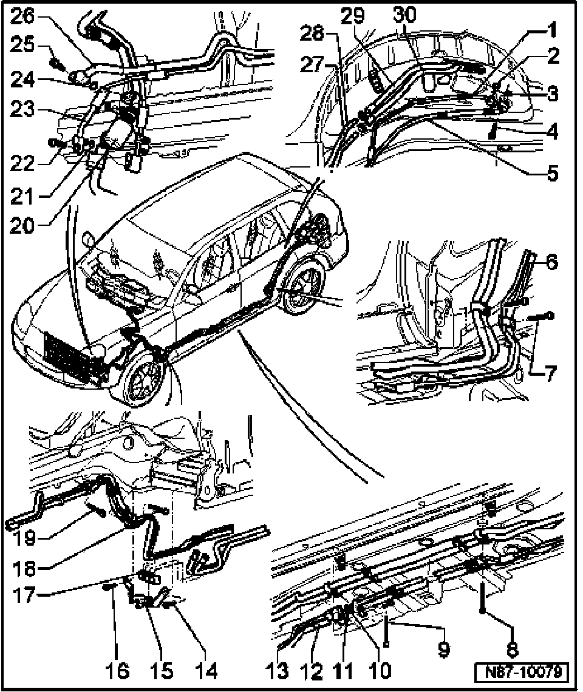

Hose/Line HVAC: Service and Repair
Rear Heating And A/C Unit A/C Refrigerant System Components, Servicing
NOTE:
- Before carrying out any work on the A/C refrigerant system, refer to all CAUTIONS and WARNINGS in A/C refrigerant system safety measures.
- Evacuate refrigerant circuit using refrigerant recycling/recovery unit Kent-Moore ACR(4) (or UL approved equivalent).
- O-rings used on R-134a systems may be red, green, violet or black.
- Always plug open refrigerant line connections to prevent dirt and moisture contamination.

1. Refrigerant line
- High pressure side
- Behind left rear wheel housing cover
2. O-ring
- Always replace
- 9.5 mm; 2.5 mm
3. O-ring
- Always replace
- 13.7 mm; 2.5 mm
4. Socket head bolt M10x84
- 12 Nm ± 1
- Qty.: 2
5. Refrigerant line
- Low pressure side
- Behind left rear wheel housing cover
6. Socket head bolt M6x35
- 3.5 Nm ± 0.5
7. Socket head bolt M6x35
- 3.5 Nm ± 0.5
8. Socket head bolt M6x70
- 3.5 Nm ± 0.5
9. Socket head bolt M6x70
- 3.5 Nm ± 0.5
10. O-ring
- Always replace
- 13.7 mm; 2.5 mm
11. O-ring
- Always replace
- 9.5 mm; 2.5 mm
12. Refrigerant line
- Low pressure side
- Under vehicle
13. Refrigerant line
- High pressure side
- Under vehicle
14. Bolt M6x16
- 8 Nm ± 1.2
15. Bracket
16. Bolt M6x16
- 8 Nm ± 1.2
17. Spacer bracket
18. Socket head bolt M6x35
- 3.5 Nm ± 0.5
19. Socket head bolt M6x35
- 3.5 Nm ± 0.5
20. Damper
21. O-ring
- Always replace
- 13.7 mm; 2.5 mm
22. Socket head bolt M8x28
- 12 Nm ± 1
23. Refrigerant line
- High pressure side
- Behind left front wheel housing cover
24. O-ring
- Always replace
- 13.7 mm; 2.5 mm
25. Socket head bolt M8x28
- 12 Nm ± 1
26. Refrigerant line
- Low pressure side
- Behind left front wheel housing cover
27. Coolant pipe
- To rear heater core
- Behind left rear wheel housing cover
28. Coolant pipe
- To rear heater core
- Behind left front wheel housing cover
29. Coolant hose
- To rear heater core
- Behind left rear wheel housing cover
30. Coolant hose
- To rear heater core
- Behind left front wheel housing cover